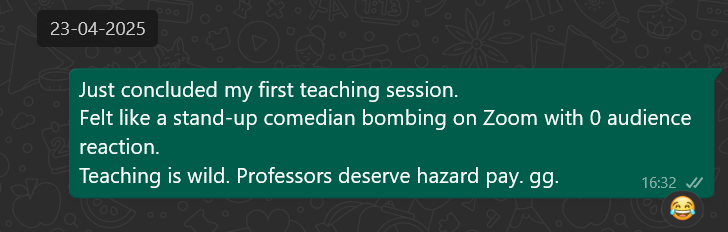
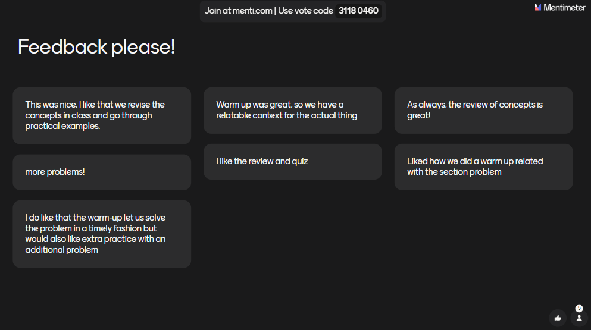
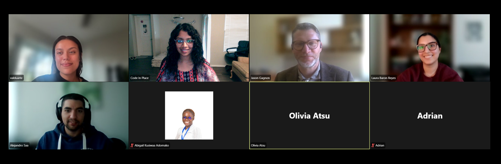
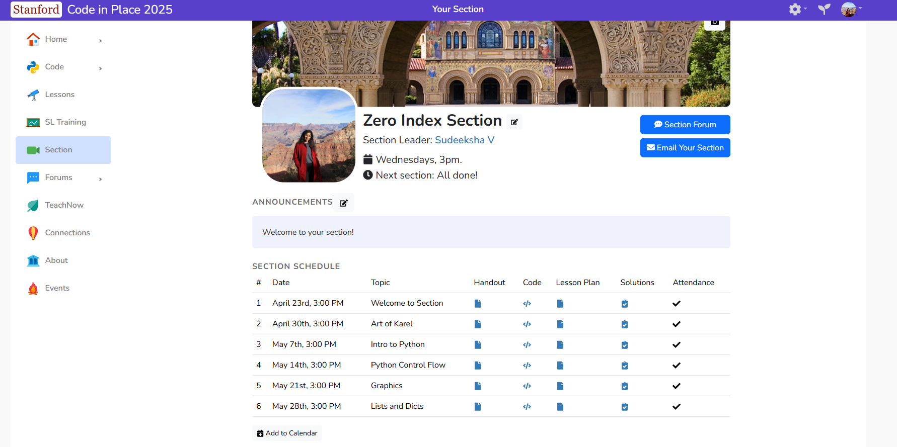

In the quiet days of 2020, when the world had retreated indoors and silence had replaced the usual hum of our lives, I found myself searching for something that felt like purpose. I signed up for Stanford's Code in Place, curious, a little afraid, and hopeful that learning to code would unlock something new in me.
I didn't know then that I was planting a seed whose branches I would one day climb.
Five years later, that seed had grown into an invitation to return, not as a student, but as a guide. I became a Section Leader for Code in Place 2025, entrusted with lighting the path for others who were standing where I once stood: at the threshold of something unknown.

Nothing quite prepares you for the moment when you become the one holding the lantern, realizing how heavy it can feel, and how luminous it can become. I suddenly felt like texting all my old teachers an apology and a thank you.
I was fortunate to carry the wisdom of my mother beside me. My mom, who jokingly calls herself a "Professor of KG to PG," has spent 32 years teaching everyone from kindergarten children to senior professionals.
When I was a child, I would often trail behind her into classrooms, sitting in the back row, watching her transform knowledge into something alive. During the pandemic, I watched her teach into a camera, and somehow her warmth still reached every corner of the room. She reminded me that teaching is not only about imparting facts; it is an act of connection. It is a form of generosity.
I carried her advice into every session. Week by week, we explored the foundations of Python together: how to think in terms of control flow, how to build and navigate data structures, and how to break down problems with the help of Karel the Robot, that little digital companion who teaches you that every complex challenge starts with a single step.
I used Mentimeter polls (LOVE THEM!! 💯), shared stories, and created moments where curiosity could bloom. Slowly, the silence gave way to laughter, questions, and a sense of shared discovery.
The feedback from my students was the most humbling gift. They told me they felt supported and inspired. What they didn't know is that they were doing the same for me.

Teaching this diverse group from so many countries and walks of life reminded me that learning is never solitary. It is a tapestry woven by every voice, every question, every small moment of courage.

To Professors Mehran Sahami and Chris Piech, and to the brilliant Head TAs, thank you for planting this idea that learning can belong to everyone.
And to my section, thank you for your kindness, your patience, and your trust. You made this journey unforgettable.
If you ever find yourself invited to teach something you once struggled to learn, accept it with an open heart. You will discover that the greatest lessons are not about the subject itself, but about what it means to walk beside another person as they grow.

🌿 Here's to the full circles, the quiet transformations, and the unseen threads that connect us all.